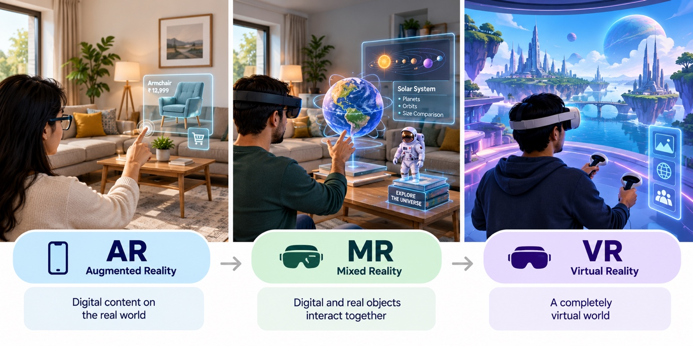
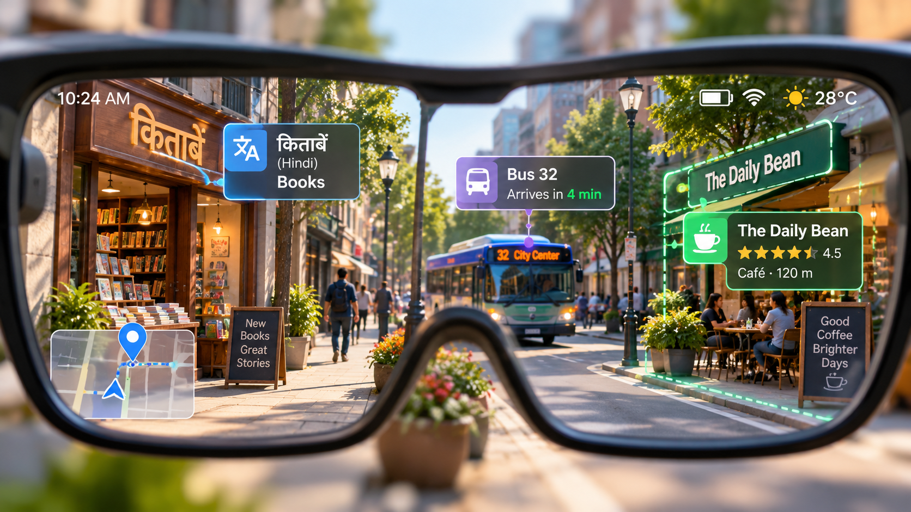
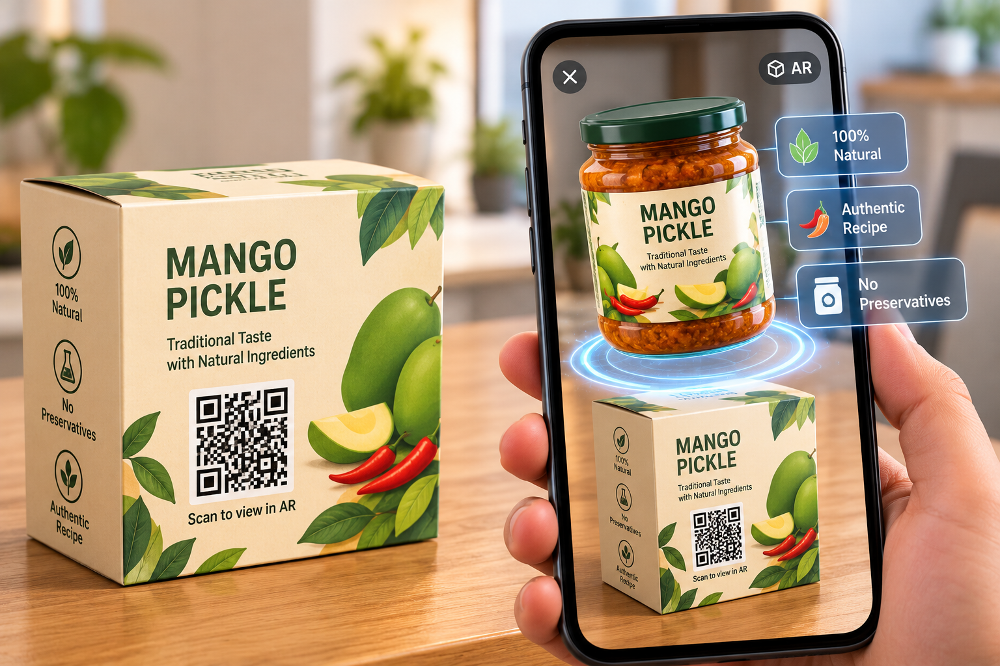

Think about how you used technology today.
You probably looked down at a phone, across at a laptop, maybe up at a TV. Every one of those experiences happened inside a flat, glowing rectangle. We’ve become so used to this that we rarely notice it. Information lives on the screen. The real world lives everywhere else.
Spatial computing questions that split.
Instead of bringing yourself to the screen, spatial computing brings digital content into the space around you. A 3D model sits on your actual table. Instructions float next to the machine you’re repairing. A virtual classroom surrounds you instead of fitting inside a Zoom window.
At MindSprout Technologies, we spend our days building AR, VR and AI experiences, and we’ve seen first-hand how people react the first time a digital object appears in their real room. There’s usually a small pause, then a smile, then a hand reaching out to “touch” it. That moment says a lot about where computing is heading.
What Spatial Computing Actually Means
The terminology around Extended Reality (XR) can quickly become confusing. Here is the straightforward reality spectrum:

Augmented Reality (AR)
Adds digital content directly onto your real world. You still see your room, but now there’s a 3D armchair in the corner, viewed through your phone or lightweight glasses.
Mixed Reality (MR)
Digital and physical objects interact together. Digital objects understand the room’s geometry: a virtual ball bounces off your real wall or hides behind your real sofa.
Virtual Reality (VR)
Replaces your physical world completely. You put on a headset and you are immediately inside a high-voltage training simulator, an aircraft cockpit, or an alien landscape.
Spatial computing is the umbrella over all of this. It’s the unifying paradigm that computers can understand physical space (walls, floors, objects, hands, people) and place digital information inside it in a way that feels natural, stable, and intuitive.
“What is on the screen?”
“What is in the room, and what should be added to it?”
Digital Objects in Physical Spaces
This is where most people first experience spatial computing, often without realising it has a technical name. By removing the boundary of the screen, information is seamlessly rendered in context:
1. Retail & E-Commerce
You are buying a sofa online. Instead of guessing from flat photos, you point your phone at your living room and see the sofa at full 1:1 scale, in your space, next to your actual curtains.
2. Real Estate & Architecture
A prospective buyer scans a QR code on a print brochure, and an interactive 3D model of the apartment opens instantly in their phone’s browser.
3. Education & Training
A chemistry student who struggled with flat 2D textbook diagrams can place a floating 3D molecule on their desk, rotate it with hand gestures, and inspect electron bonds.
4. Interactive Packaging & Print
A printed business card, product carton, or exhibition banner comes alive when scanned by any smartphone camera, projecting video reels and 3D product previews.
The common thread across every one of these examples? Information is placed where it is actually useful, rather than trapped inside a separate device you have to switch back and forth to.
Immersive Interfaces: Beyond Click and Tap
The way we interact with technology is changing just as fundamentally as where content appears. For decades, human-computer interaction was constrained to mice, physical keyboards, and glass touchscreens. In spatial computing, those feel clumsy. Instead, you interact using natural human modalities:
Your Hands
Pinch to select, grab to rotate, spread your fingers to resize models in mid-air.
Your Eyes
Gaze-directed focus: look at a button or control to instantly highlight it.
Your Voice
Context-aware commands: speak what you need without touching any physical surface.
Your Body
Walk closer to inspect micro details, step backward to take in the holistic system.
To understand how profound this shift is, consider a real industrial maintenance scenario:
A maintenance technician checks a machine’s operational health:
- Technician walks away from the machine to a computer terminal.
- Logs into a separate ERP dashboard and types the serial number.
- Reads the temperature telemetry and error codes on the flat screen.
- Walks back across the factory floor trying to remember what they saw.
The technician looks at the equipment through AR glasses or a tablet:
- Live operating temperature, service history, and error codes float directly above the machine.
- Technician speaks: "Show me repair steps for valve 4."
- Animated 3D instructions illuminate the exact bolt and torque needed.
- Hands stay on tools; zero context switching or cognitive memory strain.
The Ergonomics of Edgelss Design
On a traditional screen, designers create within boundaries and pixel borders. In physical space, there are no edges.
Spatial designers must solve for comfortable focal depth (typically 1.5 to 2.0 meters), legibility across changing background lighting, and ergonomic fatigue (such as avoiding "gorilla arm" from keeping hands elevated in mid-air for extended durations). Good spatial design is as much about human biomechanics as it is about visual aesthetics.
Where It’s Already Working: High-Stakes Industries
Spatial computing isn’t just an entertaining consumer novelty. Some of its most valuable, high-ROI results come from enterprise environments where operational errors are prohibitively expensive:
High-Voltage & Hazardous Procedure Training
Field technicians practise dangerous procedures (such as high-voltage electrical grid repairs) inside virtual environments where mistakes cost zero lives and zero downtime. Once qualified, AR provides step-by-step overlays on real field gear.
Flight Simulators & Tactical Cockpit Training
Pilots train for catastrophic, rare system emergencies repeatedly and safely in hyper-realistic XR cockpits — at a tiny fraction of the cost, fuel, and risk of airborne flight hours.
Guided Assembly & Remote Expert Support
Complex mechanical assembly workflows are illuminated directly onto workpieces. Offsite senior engineers see exactly what on-site technicians see and draw 3D arrows directly into their visual field.
Surgical Pre-Op Planning & Medical Anatomy
Surgeons convert MRI and CT patient scans into accurate, true-to-scale 3D holographic models to plan intricate incisions prior to entering the theatre, minimizing patient trauma and operation time.
WebAR Civic Campaigns & Cultural Heritage
Governments and public agencies use frictionless WebAR campaigns accessed via smartphone QR scans to make civic messaging, road safety, and historical monuments interactive and memorable.
In every single case, the true business value isn’t simply that the technology looks futuristic. It’s that people learn faster, commit fewer expensive errors, and retain complex knowledge more thoroughly when information is embedded directly in its physical context.
Where AI Comes In: Spatial AI
Spatial computing reaches its full potential when combined with modern artificial intelligence. For a headset or phone to place digital content with pinpoint intelligence, it must first comprehend the real world:

Advanced computer vision and neural networks enable devices to recognize: this is a load-bearing wall, this is a table surface, this is an operator’s left hand, and that storefront signboard is written in Hindi or Punjabi.
Now, integrate multimodal AI assistants into that perception stream. Smart glasses are increasingly engineered around AI agents that can see what you see, hear what you hear, and respond to your environment in real time:
- Contextual Diagnostics: Look at a complex circuit breaker or engine block and ask, "What's causing that vibrating noise?"
- Real-Time Translation: Look at a menu or transport schedule in another language and see it translated in place right across the physical sign.
- Hands-Free Contextual Guidance: As you prepare a recipe or repair a generator, the AI monitors your steps and alerts you before you miss a critical bolt.
The technological trajectory is unmistakable: The defining computing device of the next decade may not be the one you look at. It will be the one you look through.
The Future Beyond Screens, and the Honest Challenges
Will smart glasses replace smartphones next year? No. Anyone claiming the smartphone is dead within 12 months is getting far ahead of engineering reality.
Full mixed-reality headsets are still premium investments. Samsung’s Galaxy XR headset launched at $1,799, encountering the same pricing friction as Apple’s Vision Pro ($3,499). Furthermore, many users still find bulky headsets too heavy for continuous multi-hour sessions.
Before spatial computing becomes as ubiquitous as mobile devices, four substantial friction points must be solved:
Comfort & Battery Thermal Limits
Optical displays and continuous computer vision demand significant power. Packaging full-day battery life into glasses under 50 grams without overheating remains a hard physics challenge.
Public Privacy & Cameras
Outward-facing cameras and biometric eye tracking worn in public spaces raise understandable concerns around non-consensual recording, surveillance, and data storage.
Content & Ecosystem Maturity
Brilliant hardware is useless without compelling, everyday software experiences. Developers are still figuring out what spatial UX primitives feel truly native.
Universal Accessibility
Spatial interfaces must be engineered to accommodate diverse physical mobility, eyesight conditions, prescription lenses, sensory differences, and budgets.
Despite these hurdles, market velocity is accelerating. IDC projects the XR market to surge by 33.5% in 2026, propelled by AI smart glasses, industrial enterprise training mandates, and the arrival of Android XR.
At MindSprout, our view is that the transition will be gradual. Phones will remain central for many years, but more and more daily tasks will shift off the screen and settle into the physical world around us. That process has already begun.
What Businesses Can Do Today: A Practical Roadmap
You do not need to invest hundreds of thousands of dollars in high-end headsets to begin benefiting from spatial technology. Here is the pragmatic playbook we recommend to our enterprise clients:

Five Strategic Steps for Enterprises
- 1. Start with WebAR (Zero App Download Friction): Browser-based augmented reality works out-of-the-box on billions of modern iOS and Android smartphones. Users simply point their camera at a QR code, and the spatial model opens immediately. Open frameworks like MindAR, WebXR, and Google's <model-viewer> make this lightweight and cost-effective even for early-stage teams.
- 2. Pick One Measurable High-Value Use Case: Do not try to build an all-encompassing virtual metaverse. Focus on a single friction point where 3D clarity delivers immediate value: technician safety training, e-commerce product sizing, sales brochures, or customer self-service support.
- 3. Measure Concrete Business Metrics: Benchmark training completion speed, assembly defect reduction, customer return rates, or inbound inquiry volume. Spatial computing must prove its commercial viability through hard business ROI, not technological novelty.
- 4. Establish a 3D Digital Asset Pipeline Early: Start systematically cataloging 3D CAD models of your products, retail spaces, and heavy equipment. High-fidelity 3D assets are reusable across WebAR, VR simulators, interactive websites, and upcoming spatial headsets.
- 5. Architect for Privacy & Accessibility from Day One: Establish clear data governance policies regarding camera feeds, facial privacy, and spatial room scans to earn long-term user and regulator trust.
For Developers, Engineers & Students
If you want to future-proof your career, now is the time to master spatial fundamentals:
- Understand 3D spatial math: coordinate systems (Euler vs quaternions), raycasting, mesh occlusion, and lighting estimation.
- Experiment with WebXR and three.js in the browser before jumping into heavy engines.
- Build with Unity + AR Foundation or Unreal Engine to deploy cross-platform experiences to Android, iOS, and headsets.
- Spatial computing developers are still rare worldwide. Mastering this intersection of 3D graphics, computer vision, and AI is one of the highest-leverage career opportunities in tech today.
Our Honest Take: The Canvas of Tomorrow
The screen isn’t going away tomorrow. But it is no longer the only canvas where computing occurs.
Over the next decade, more of our digital lives will move into the physical space around us: anchored to our desks, hovering in our classrooms, guiding assembly on factory floors, and augmenting our vision through lightweight glasses.
The enterprises and builders who experiment today, discover what genuinely delivers value for their people, and build useful experiences—rather than superficial gimmicks—will lead their respective industries when this shift accelerates.
At MindSprout Technologies, we design and build bespoke AR, VR, and Spatial AI solutions for enterprise training, industrial visualization, and generative commerce. We also mentor teams to understand, adopt, and deploy extended reality systems with confidence.
Ready to Explore Spatial Computing for Your Organization?
Whether you're developing a WebAR product demonstrator, building an industrial VR safety simulator, or training your engineering team in spatial development, let's explore how MindSprout can bring your ideas into 3D reality.
Schedule a Spatial Tech Discovery Call